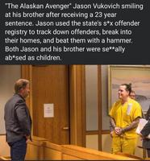

Researchers at the Thomas Jefferson National Accelerator Facility are advancing Accelerator-Driven Systems (ADS) that use high-energy proton beams to transmute long-lived nuclear waste into shorter-lived isotopes. "The process also generates significant heat, which can be harnessed to produce additional electricity for the grid," reports Interesting Engineering. The projects are supported by $8.17 million in grants from the Department of Energy's NEWTON (Nuclear Energy Waste Transmutation Optimized Now) program. From the report: The researchers are developing ADS technology. This system uses a particle accelerator to fire high-energy protons at a target (such as liquid mercury), triggering a process called "spallation." This releases a flood of neutrons that interact with unwanted, long-lived isotopes in nuclear waste. The technology can effectively "burn" the most hazardous components of the waste by transmuting these elements. While unprocessed fuel remains dangerous for approximately 100,000 years, partitioning and recycling via ADS can reduce that window to just 300 years. [...]
To make ADS economically viability, Jefferson Lab is tackling two primary technical hurdles: efficiency and power. Traditional particle accelerators require massive, expensive cryogenic cooling systems to reach superconducting temperatures. Jefferson Lab is pioneering a more cost-effective approach by coating the interior of pure niobium cavities with tin. These niobium-tin cavities can operate at higher temperatures, allowing for the use of standard commercial cooling units rather than custom, large-scale cryogenic plants. The team is also developing spoke cavities, which is a complex design intended to drive even higher efficiency in neutron spallation.
The second project focuses on the power source behind the beam. Researchers are adapting the magnetron -- the same component that powers microwave ovens -- to provide the 10 megawatts of power required for ADS. The primary challenge is that the energy frequency must match the accelerator cavity precisely at 805 Megahertz. In collaboration with Stellant Systems, researchers are prototyping advanced magnetrons that can be combined to reach the necessary high-power thresholds with maximum efficiency. The NEWTON program aims to enable the recycling of the entire US commercial nuclear fuel stockpile within the next 30 years.
Read more of this story at Slashdot.
An anonymous reader quotes a report from NPR: NASA could launch four astronauts on a mission to fly around the moon as soon as March 6th. That's the launch date (PDF) that the space agency is now working towards following a successful test fueling of its big, 322-foot-tall moon rocket, which is standing on a launch pad at the Kennedy Space Center in Florida.
"This is really getting real," says Lori Glaze, acting associate administrator of NASA's exploration systems development mission directorate. "It's time to get serious and start getting excited." But she cautioned that there's still some pending work that remains to be done out at the launch pad, and officials will have to conduct a multi-day flight readiness review late next week to make sure that every aspect of the mission is truly ready to go. "We need to successfully navigate all of those, but assuming that happens, it puts us in a very good position to target March 6th," she says, noting that the flight readiness review will be "extensive and detailed." [...]
When NASA workers first tested out fueling the rocket earlier this month, they encountered problems like a liquid hydrogen leak. Swapping out some seals and other work seems to have fixed these issues, according to officials who say that the latest countdown dress rehearsal went smoothly, despite glitches such as a loss of ground communications in the Launch Control Center that forced workers to temporarily use backups.
Read more of this story at Slashdot.
Users say Pinterest has become flooded with AI-generated images and heavy-handed automated moderation, with artists reporting wrongful takedowns and their hand-drawn work mislabeled as "AI modified." As the company doubles down on AI features and layoffs, longtime users argue the platform's creative ecosystem is being undermined. 404 Media reports: "I feel like, increasingly, it's impossible to talk to a single human [at Pinterest]," artist and Pinterest user Tiana Oreglia told 404 Media. "Along with being filled with AI images that have been completely ruining the platform, Pinterest has implemented terrible AI moderation that the community is up in arms about. It's banning people randomly and I keep getting takedown notices for pins." [...]
r/Pinterest is awash in users complaining about AI-related issues on the site. "Pinterest keeps automatically adding the 'AI modified' tag to my Pins... every time I appeal, Pinterest reviews it and removes the AI label. But then... the same thing happens again on new Pins and new artwork. So I'm stuck in this endless loop of appealing, label removed, new Pin gets tagged again," read a post on r/Pinterest. The redditor told 404 Media that this has happened three times so far and it takes between 24 to 48 hours to sort out. "I actively promote my work as 100% hand-drawn and 'no AI,'" they said. "On Etsy, I clearly position my brand around original illustration. So when a Pinterest Pin is labeled 'Hand Drawn' but simultaneously marked as 'AI modified,' it creates confusion and undermines that positioning."
Artist Min Zakuga told 404 Media that they've seen a lot of their art on Pinterest get labeled as "AI modified" despite being older than image generation tech. "There is no way to take their auto-labeling off, other than going through a horribly long process where you have to prove it was not AI, which still may get rejected," she said. "Even artwork from 10-13 years ago will still be labeled by Pinterest as AI, with them knowing full well something from 10 years ago could not possibly be AI." Other users are tired of seeing a constant flood of AI-generated art in their feeds. "I can't even scroll through 100 pins without 95 out of them being some AI slop or theft, let alone very talented artists tend to be sucked down and are being unrecognized by the sheer amount of it," said another post. "I don't want to triple check my sources every single time I look at a pin, but I refuse to use any of that soulless garbage. However, Pinterest has been infested. Made obsolete."
Read more of this story at Slashdot.
An anonymous reader quotes a report from Bloomberg: Shares of cybersecurity software companies tumbled Friday after Anthropic PBC introduced a new security feature into its Claude AI model. Crowdstrike Holdings was the among the biggest decliners, falling as much as 6.5%, while Cloudflare slumped more than 6%. Meanwhile, Zscaler dropped 3.5%, SailPoint shed 6.8%, and Okta declined 5.7%. The Global X Cybersecurity ETF fell as much as 3.8%, extending its losses on the year to 14%.
Anthropic said the new tool will "scans codebases for security vulnerabilities and suggests targeted software patches for human review." The firm said the update is available in a limited research preview for now.
Read more of this story at Slashdot.
An anonymous reader quotes a report from Ars Technica: The English-language edition of Wikipedia is blacklisting Archive.today after the controversial archive site was used to direct a distributed denial of service (DDoS) attack against a blog. In the course of discussing whether Archive.today should be deprecated because of the DDoS, Wikipedia editors discovered that the archive site altered snapshots of webpages to insert the name of the blogger who was targeted by the DDoS. The alterations were apparently fueled by a grudge against the blogger over a post that described how the Archive.today maintainer hid their identity behind several aliases.
"There is consensus to immediately deprecate archive.today, and, as soon as practicable, add it to the spam blacklist (or create an edit filter that blocks adding new links), and remove all links to it," stated an update today on Wikipedia's Archive.today discussion. "There is a strong consensus that Wikipedia should not direct its readers towards a website that hijacks users' computers to run a DDoS attack (see WP:ELNO#3). Additionally, evidence has been presented that archive.today's operators have altered the content of archived pages, rendering it unreliable."
More than 695,000 links to Archive.today are distributed across 400,000 or so Wikipedia pages. The archive site, which is facing an investigation in which the FBI is trying to uncover the identity of its founder, is commonly used to bypass news paywalls. "Those in favor of maintaining the status quo rested their arguments primarily on the utility of archive.today for verifiability," said today's Wikipedia update. "However, an analysis of existing links has shown that most of its uses can be replaced. Several editors started to work out implementation details during this RfC [request for comment] and the community should figure out how to efficiently remove links to archive.today."
Read more of this story at Slashdot.
Microsoft pulled a year-old blog post this week after a Hacker News thread flagged that it had encouraged developers to download all seven Harry Potter books from a Kaggle dataset -- incorrectly marked as public domain -- and use them to train AI models on the company's Azure platform.
The blog, written in November 2024 by senior product manager Pooja Kamath, walked users through building Q&A systems and generating fan fiction using the copyrighted texts, and even included a Microsoft-branded AI image of Harry Potter. The Kaggle dataset's uploader, data scientist Shubham Maindola, told Ars Technica the public domain label was "a mistake" and deleted the dataset after the outlet reached out.
Read more of this story at Slashdot.
An anonymous reader shares a report: Meta product managers are rebranding. Some are now calling themselves "AI builders," a signal that AI coding tools are changing who gets to build software inside the company. One of them, Jeremie Guedj, announced the change in a LinkedIn post last week. "I still can't believe I'm writing this: as of today, my full-time job at Meta is AI Builder," he wrote.
Guedj has spent more than a decade as a traditional product manager, a role that sets the road map and strategy for products then built by engineering teams. He said that while his title in Meta's internal systems still lists him as a product manager, his actual work is now full-time building with AI on what he calls an "AI-native team." Another Meta product manager also lists "AI Builder" on her LinkedIn profile, while at least two other Meta engineers write the term in their bios, Business Insider found.
Read more of this story at Slashdot.
An anonymous reader shares a report: When will AI movies start showing up in theaters nationwide? It was supposed to be next month. But when word leaked online that an AI short film contest winner was going to start screening before feature presentations in AMC Theatres, the cinema chain decided not to run the content.
The issue began earlier this week with the inaugural Frame Forward AI Animated Film Festival announcing Igor Alferov's short film Thanksgiving Day had won the contest. The prize package for included Thanksgiving Day getting a national two-week run in theaters nationwide. When word of this began hitting social media, however, some were dismayed by the prospect of exhibitors embracing AI content, with many singling out AMC Theatres for criticism.
Except the short is not actually programmed by exhibitors, exactly, but by Screenvision Media -- a third-party company which manages the 20-minute, advertising-driven pre-show before a theater's lights go down. Screenvision -- which co-organized the festival along with Modern Uprising Studios -- provides content to multiple theatrical chains, not just AMC. After The Hollywood Reporter reached out to AMC about the brewing controversy, the company issued this statement to THR on Thursday: "This content is an initiative from Screenvision Media, which manages pre-show advertising for several movie theatre chains in the United States and runs in fewer than 30 percent of AMC's U.S. locations. AMC was not involved in the creation of the content or the initiative and has informed Screenvision that AMC locations will not participate."
Read more of this story at Slashdot.
Backlash intensified against Discord's age verification rollout after it briefly disclosed a UK age-verification test involving vendor Persona, contradicting earlier claims about minimal ID storage and transparency. Ars Technica explains: One of the major complaints was that Discord planned to collect more government IDs as part of its global age verification process. It shocked many that Discord would be so bold so soon after a third-party breach of a former age check partner's services recently exposed 70,000 Discord users' government IDs.
Attempting to reassure users, Discord claimed that most users wouldn't have to show ID, instead relying on video selfies using AI to estimate ages, which raised separate privacy concerns. In the future, perhaps behavioral signals would override the need for age checks for most users, Discord suggested, seemingly downplaying the risk that sensitive data would be improperly stored. Discord didn't hide that it planned to continue requesting IDs for any user appealing an incorrect age assessment, and users weren't happy, since that is exactly how the prior breach happened. Responding to critics, Discord claimed that the majority of ID data was promptly deleted. Specifically, Savannah Badalich, Discord's global head of product policy, told The Verge that IDs shared during appeals "are deleted quickly -- in most cases, immediately after age confirmation."
It's unsurprising then that backlash exploded after Discord posted, and then weirdly deleted, a disclaimer on an FAQ about Discord's age assurance policies that contradicted Discord's hyped short timeline for storing IDs. An archived version of the page shows the note shared this warning: "Important: If you're located in the UK, you may be part of an experiment where your information will be processed by an age-assurance vendor, Persona. The information you submit will be temporarily stored for up to 7 days, then deleted. For ID document verification, all details are blurred except your photo and date of birth, so only what's truly needed for age verification is used."
Critics felt that Discord was obscuring not just how long IDs may be stored, but also the entities collecting information. Discord did not provide details on what the experiment was testing or how many users were affected, and Persona was not listed as a partner on its platform. Asked for comment, Discord told Ars that only a small number of users was included in the experiment, which ran for less than one month. That test has since concluded, Discord confirmed, and Persona is no longer an active vendor partnering with Discord. Moving forward, Discord promised to "keep our users informed as vendors are added or updated." While Discord seeks to distance itself from Persona, Rick Song, Persona's CEO [...] told Ars that all the data of verified individuals involved in Discord's test has been deleted. Ars also notes that hackers "quickly exposed a 'workaround' to avoid Persona's age checks on Discord" and "found a Persona frontend exposed to the open internet on a U.S. government authorized server."
The Rage, an independent publication that covers financial surveillance, reported: "In 2,456 publicly accessible files, the code revealed the extensive surveillance Persona software performs on its users, bundled in an interface that pairs facial recognition with financial reporting -- and a parallel implementation that appears designed to serve federal agencies." While Persona does not have any government contracts, the exposed service "appears to be powered by an OpenAI chatbot," The Rage noted.
Hackers warned "that OpenAI may have created an internal database for Persona identity checks that spans all OpenAI users via its internal watchlistdb," seemingly exploiting the "opportunity to go from comparing users against a single federal watchlist, to creating the watchlist of all users themselves."
Read more of this story at Slashdot.
Meta is pivoting Horizon Worlds away from its original VR-centric metaverse vision and toward a mobile-first strategy, "explicitly separating" its Quest VR platform from the virtual world. TechCrunch reports: By going mobile-first, Horizon Worlds is positioning itself to compete with popular platforms like Roblox and Fortnite. "We're in a strong position to deliver synchronous social games at scale, thanks to our unique ability to connect those games with billions of people on the world's biggest social networks," Samantha Ryan, Reality Labs' VP of content, said in the blog post. "You saw this strategy start to unfold in 2025, and now, it's our main focus." Ryan went on to note that Meta is still focused on VR hardware. "We have a robust roadmap of future VR headsets that will be tailored to different audience segments as the market grows and matures," Ryan wrote.
Read more of this story at Slashdot.
Xbox chief and Microsoft Gaming CEO Phil Spencer is leaving Microsoft after nearly 40 years at the company. "Meanwhile, Xbox President Sarah Bond, "long thought by many both inside and outside of Microsoft to be Spencer's heir apparent, has resigned," reports IGN. From the report: The new CEO of Microsoft Gaming will be Asha Sharma, currently the President of Microsoft's CoreAI product. Finally, Xbox Game Studios head Matt Booty is being promoted to Chief Content Officer and will work closely with Sharma. "I want to thank Phil for his extraordinary leadership and partnership," Microsoft CEO Satya Nadella said in an email sent to Microsoft staff. "Over 38 years at Microsoft, including 12 years leading Gaming, Phil helped transform what we do and how we do it." [...]
Spencer was named Head of Xbox in March of 2014, when he was tasked with righting a ship that had made a number of product choices and policy decisions that rubbed core gamers the wrong way in the run-up to the launch of the Xbox One in Fall 2013. Long hailed by gamers as being one of their own, Spencer could frequently be found on Xbox Live, playing games regularly with fellow Xbox gamers and racking up a healthy Gamerscore. His first major move when put in charge was decoupling the Kinect 2.0 peripheral from the Xbox One package, thus immediately reducing the new console's price by $100 to $399, matching the day-one price of Sony's PlayStation 4. He spearheaded the much-heralded backwards compatibility movement within Xbox, the Xbox Game Pass service was born under his watch, and accessibility made major advances during his tenure in both hardware and software. Xbox Play Anywhere, which sought to let gamers play their Xbox games on any device, be it a PC, console, or handheld, isn't new but has been a big recent focal point.
Spencer's time running Xbox will perhaps be most remembered for Microsoft's $69 billion acquisition of Activision-Blizzard-King in 2022, which took almost two years to achieve regulatory approval from various agencies around the world. But Spencer began trying to solve for Xbox's dearth of first-party games in 2018, when the first wave of studio acquisitions occurred. Prior to the Activision deal, Spencer's biggest move came with the $7.5 billion acquisition of ZeniMax, parent company of Bethesda, in 2020. The deal gave Xbox total ownership of Bethesda Game Studios and its Fallout and Elder Scrolls franchises along with id Software and its Doom and Quake IPs, among many others. Questions arose from there about whether or not that meant all of Xbox's new studios would produce games exclusively for Xbox consoles, and while some games were kept off of PlayStation platforms temporarily, many weren't and most now seem to come to PS5 eventually, if not on day one.
Read more of this story at Slashdot.
OpenAI faces four fundamental strategic problems that no amount of fundraising or capex announcements can paper over, according to analyst Benedict Evans: it has no unique technology, its enormous user base is shallow and fragile, incumbents like Google and Meta are leveraging superior distribution to close the gap, and its product roadmap is dictated by whatever the research labs happen to discover rather than by deliberate product strategy.
The company claims 800-900 million weekly active users, but 80% of them sent fewer than 1,000 messages across all of 2025, averaging fewer than three prompts a day, and only 5% pay. OpenAI has acknowledged what it calls a "capability gap" between what models can do and what people use them for -- a framing Evans reads as a polite way to avoid admitting the absence of product-market fit. Gemini and Meta AI are meanwhile gaining share rapidly because the products look nearly indistinguishable to typical users, and Google and Meta already have the distribution to push them. Evans compares ChatGPT to Netscape -- an early leader in a category where the products were hard to tell apart, overtaken by a competitor that used distribution as a crowbar.
On capex, Evans argues that Altman's ambitions -- claiming $1.4 trillion and 30 gigawatts of future compute -- amount to an attempt to will OpenAI into a seat at a table where annual infrastructure spending may need to reach hundreds of billions. But a seat at the table is not leverage over it; he compares this to TSMC, which holds a de facto chip monopoly yet captures little value further up the stack.
OpenAI's own strategy diagrams from late last year laid out a full-stack platform vision -- chips, models, developer tools, consumer products -- each layer reinforcing the others. Evans argues this borrows the language of Windows and iOS without possessing any of the underlying dynamics: no network effect, no lock-in preventing developers from calling a different model's API, and no reason customers would know or care which foundation model powers the product they are using.
Read more of this story at Slashdot.
Cable TV providers have spent the past decade losing tens of millions of households to streaming services, but companies like Charter Communications are now slowing that exodus by bundling the very apps that once threatened to replace them.
Charter added 44,000 net video subscribers in the fourth quarter of 2025, its first growth in that count since 2020, after integrating Disney+, Hulu, and ESPN+ directly into Spectrum cable packages -- a deal that grew out of a contentious 2023 contract dispute with Disney. Comcast and Optimum still lost subscribers in the quarter, though both saw those losses narrow.
Charter's Q4 numbers also got a lift from a 15-day Disney channel blackout on YouTube TV during football season, which drove more than 14,000 subscribers to Spectrum. Charter has been discounting aggressively -- video revenue fell 10% year over year despite the subscriber gains. Cox Communications launched its first streaming-inclusive cable bundles last month, and Dish Network has yet to integrate streaming apps into its packages at all.
Read more of this story at Slashdot.
OpenAI is reportedly developing its first consumer hardware product: a $200-$300 smart speaker with a built-in camera capable of recognizing "items on a nearby table or conversations people are having in the vicinity." It's also said to feature Face ID-style authentication for purchases. The Verge reports: In addition to the smart speaker, OpenAI is "possibly" working on smart glasses and a smart lamp, The Information reports. (Apple may also be working on a smart lamp.) But OpenAI's glasses might not hit mass production until 2028, and while OpenAI has made prototypes of gadgets like the smart lamp, The Information says it's "unclear" if they'll be released and that OpenAI's devices plans are in early stages.
Read more of this story at Slashdot.
Goldman Sachs has launched an "S&P ex-AI" index (SPXXAI) that tracks the S&P 500 stocks not related to AI, offering investors a way to "hedge their exposure to the AI trade," reports Axios. From the report: "Excluding 'AI enablers' from the passive benchmark would eliminate the noise introduced by the AI hype," Louis Miller, head of the firm's equity custom basket desk, wrote in a note to clients about the new index.
The ex-AI index is a compilation of all the stocks in the S&P 500 that are not related to AI, also referred to as old-economy stocks.
It's available exclusively to Goldman customers, created in collaboration with S&P Dow Jones Indices.
Taking all the AI out of the S&P doesn't leave much behind, as AI companies make up ~45% of the index, according to the note. Over the last three years, the S&P 500 is up 76%. The ex-AI index is only up 32% in that same time period.
Read more of this story at Slashdot.
Shirin Ghaffary / Bloomberg : How Claude Code, released publicly a year ago, cemented Anthropic as a leader in the lucrative, emerging market for AI coding tools — Anthropic released Claude Code a year ago, forcing other rivals to play catch-up. — Even Anthropic Chief Executive Officer Dario Amodei was surprised …
Matthew Gault / 404 Media : Pinterest users, especially artists, say the platform has gotten worse in the past year due to AI moderation, AI-generated art, and AI features — Users are exhausted fighting AI moderation, AI-generated art, and AI-first features. — Pinterest has gone all in on artificial intelligence and users say it's destroying the site.
Stanley Widianto / Reuters : Google announces a partnership with Sea to develop AI tools for Sea's Shopee, Southeast Asia's most dominant e-commerce platform, and Sea's gaming unit Garena — Alphabet Inc's (GOOGL.O) Google and Southeast Asian technology conglomerate Sea Ltd (SE.N) announced a new tie-up on Thursday …
Zeyi Yang / Wired : President Trump signs an EO to continue the suspension of the de minimis exemption, despite the SCOTUS' ruling that overturned most of Trump's 2025 tariffs — The president signed an executive order implementing 10 percent global tariffs after calling the justices who struck down his signature trade policy a “disgrace.”
Andrej Karpathy / @karpathy : NanoClaw and other “claws”, smaller OpenClaw-like systems that can run on personal hardware, form a new layer running on top of agents that run on LLMs — Bought a new Mac mini to properly tinker with claws over the weekend. The apple store person told me they are selling like hotcakes and everyone is confused :) I'm definitely a bit sus'd to run OpenClaw specifically - giving my private data/keys to 400K lines of vibe coded
Jagmeet Singh / TechCrunch : Bengaluru-based Sarvam, which is building AI models for local languages, launches its Indus chat app in beta, powered by its Sarvam 105B model — Sarvam, an Indian AI startup focused on building models for local languages and users, on Friday launched its Indus chat app for web and mobile users …
Viola Zhou / Rest of World : The US launches the Tech Corps, a program under the Peace Corps to send volunteers abroad to promote American AI, as the US competes with China for AI dominance — Washington to send volunteers abroad to promote American AI models as Chinese open-weight models are proving popular.
Sean Hollister / The Verge : Microsoft Gaming CEO Asha Sharma says she is committed to “the return of Xbox” and that the company won't “flood our ecosystem with soulless AI slop” — She's promising “The return of Xbox.” … Microsoft gaming boss Phil Spencer has just announced he's leaving …
Rajesh Roy / Associated Press : India joins Pax Silica, a US-led initiative that aims to build secure supply chains for semiconductors, advanced manufacturing, and critical technologies — India joined a U.S.-led initiative to strengthen technology cooperation among strategic allies in a move Friday that underscores …
Shirin Ghaffary / Bloomberg : Source: OpenAI is projecting that its revenue will exceed $280B in 2030; last month, OpenAI said its annualized revenue grew to $20B+ in 2025 — OpenAI is projecting that its revenue will grow at a fast clip in the next few years and exceed $280 billion in 2030, according to a person familiar with the matter.
CNBC : Sources: OpenAI is telling investors it's targeting ~$600B in total compute spend by 2030, months after Sam Altman touted $1.4T in infrastructure commitments — OpenAI is telling investors that it's now targeting roughly $600 billion in total compute spend by 2030, months …
Georgia Wells / Wall Street Journal : Sources: OpenAI staff raised concerns about a Canadian mass shooting suspect months ago; OpenAI says her activity didn't meet the bar for reporting to police — ChatGPT maker opted against informing authorities about Jesse Van Rootselaar's descriptions of violence last June
Ryan McCaffrey / IGN : Xbox President Sarah Bond, long thought to be Phil Spencer's heir, is leaving; Xbox Game Studios head Matt Booty is promoted to Chief Content Officer — Spencer's run with Xbox ends just months shy of the brand's 25th anniversary. — Microsoft Gaming CEO Phil Spencer …
Jordan Novet / CNBC : Phil Spencer will retire after 38 years at Microsoft; Asha Sharma, the president of product in Microsoft's Core AI business, will become the CEO of gaming — Microsoft's head of gaming, Phil Spencer, is leaving the software maker following a 38-year tenure, as the company's Xbox business faces increased challenges.
Ryan Vlastelica / Bloomberg : Anthropic launches Claude Code Security, which “scans codebases for security vulnerabilities and suggests targeted software patches”; cybersecurity stocks fall — Shares of cybersecurity software companies tumbled Friday after Anthropic PBC introduced a new security feature into its Claude AI model.